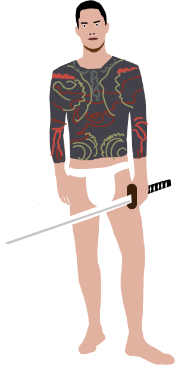

Yamaguchi-gumi (Yakuza)
Minions: 20,400
Headquaters: Kobe, Japan
Founded by the Kumicho the Yakuza first began as a local family of a few dozen. But after its minions had and established legitimate busimesses and families it soon flourished into a criminal empire of subsidiary families called the Yamguchi-gumi. Feared today as one of the biggest and baddest group of gangsters in the world. They rule the streets with an iron fist and like the Samurai serve under a leader: the Kumicho. While "Wakagashira" were elected as underbosses to the Kumicho some members were elected as wakagashira-hosa (deputy underbosses). Their activities range among extortion, gambling, the sex industry, arms and drug trafficking, and real estate and construction kickback schemes.